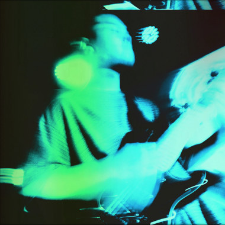

2024 | Electronic Arrangement, Production, Mixing

Listen:
《Ahh》StreetVoice
《Tidal (After di Prima)》StreetVoice
《妄》StreetVoice
酸腦一開始就是跟蜉一起玩的，他們2024年初的問我（還是我毛遂自薦？）關於之後想出的三首歌。分別是《Ahh》、《Tidal (After di Prima)》和《妄》。 《Ahh》我聽到的時候就是很後龐的氛圍了，那時候聽了很多breakcore跟glitch的東西，所以加了滿多元素， 很開心沒有被刪掉。 《Tidal (After di Prima)》就是一首怪歌，玩了很多tone，最後的吉他solo是兩軌muff face直接進DI的聲音，希望夠難聽。 《妄》就是《妄》，蜉的champagne supernova，蜉的台北流浪指南，好好聽，好難過他們做完就不玩了，希望跟我沒有關係。